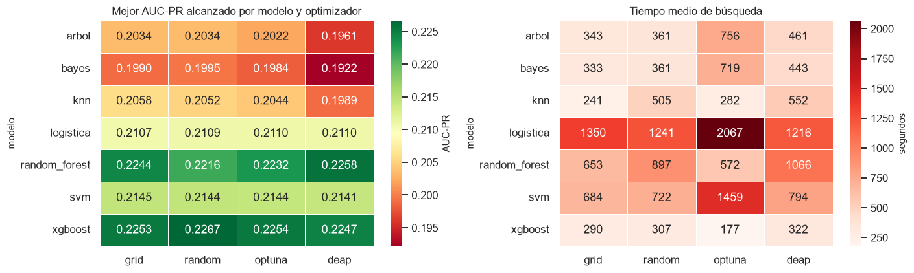
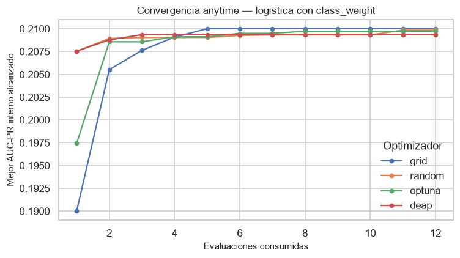
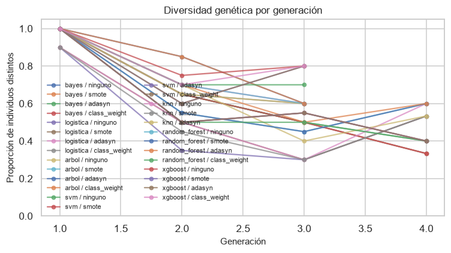
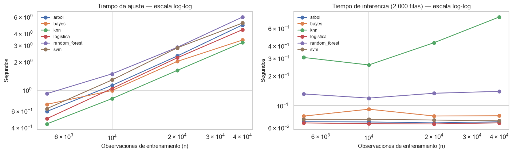

9. Comparación de optimizadores y optimización computacional#
9.1. Objetivo#
Este capítulo responde dos preguntas que la guía exige sustentar en teoría y no solo en la medición: qué método de búsqueda de hiperparámetros aprovecha mejor un presupuesto computacional dado, y qué complejidad asintótica tiene cada modelo frente al tiempo que realmente consume.
9.2. Los cuatro métodos#
9.2.1. Grid Search#
Evalúa exhaustivamente el producto cartesiano de los valores declarados. Su ventaja es la reproducibilidad total y la cobertura garantizada de la rejilla; su defecto es que el número de evaluaciones crece de forma exponencial con el número de hiperparámetros, y que reparte el presupuesto por igual entre dimensiones que no son igual de importantes. En un espacio donde un solo hiperparámetro domina el desempeño, la rejilla gasta la mayor parte de las evaluaciones variando parámetros irrelevantes.
En este proyecto, cuando la rejilla completa excede el presupuesto asignado, se evalúa un subconjunto tomado de la rejilla, lo que se registra explícitamente: no es Grid Search exhaustivo sino Grid Search truncado, y conviene no presentarlo como lo primero.
9.2.2. Random Search#
Muestrea configuraciones al azar del mismo espacio. El argumento teórico a su favor es el de Bergstra y Bengio: si solo unos pocos hiperparámetros afectan realmente al desempeño, el muestreo aleatorio explora más valores distintos de esos pocos con el mismo número de evaluaciones, porque no está obligado a recorrer combinaciones de los irrelevantes. Con un presupuesto de n evaluaciones, la probabilidad de caer en el mejor 5 % del espacio es de aproximadamente 1 − 0.95ⁿ, independientemente de la dimensión.
9.2.3. Optimización bayesiana (Optuna)#
Construye un modelo probabilístico del desempeño en función de los hiperparámetros y usa ese modelo para decidir dónde evaluar a continuación. Dos componentes hay que declarar:
Modelo sustituto: Tree-structured Parzen Estimator (TPE). Es el que implementa Optuna por defecto, y es el apropiado aquí. A diferencia de un proceso gaussiano, que modela la función objetivo directamente y asume continuidad y una métrica de distancia entre configuraciones, el TPE modela por separado dos densidades: la de las configuraciones que dieron buenos resultados, l(x), y la del resto, g(x). Eso lo hace válido en espacios mixtos y discretos como los de este proyecto, donde hay parámetros categóricos (penalty, criterion, max_features) para los que una distancia euclídea no tiene sentido. Un proceso gaussiano requeriría un núcleo especial para esas variables y escalaría en O(t³) con el número de evaluaciones.
Función de adquisición: Mejora Esperada (Expected Improvement). El TPE muestrea candidatos de l(x) y elige el que maximiza la razón l(x)/g(x), lo que es equivalente a maximizar la mejora esperada. Esta función privilegia la explotación moderada: prefiere regiones con buen desempeño observado, pero mantiene exploración porque l(x) conserva masa en zonas poco visitadas. Frente al Límite Superior de Confianza, que explora más agresivamente en función de la varianza, la Mejora Esperada tiende a converger antes, lo que conviene con presupuestos pequeños como los de este experimento.
9.2.4. Algoritmo genético#
Mantiene una población de configuraciones y la hace evolucionar por selección, cruce y mutación. Los operadores implementados y su justificación:
Componente |
Elección |
Justificación |
|---|---|---|
Selección |
Torneo de tamaño 3 |
Mantiene presión selectiva moderada y no requiere normalizar las aptitudes, a diferencia de la selección proporcional (ruleta), que se degrada cuando los puntajes son parecidos entre sí, como ocurre aquí con AUC-PR en un rango estrecho |
Cruce |
Uniforme, probabilidad 0.6 |
Apropiado cuando los genes son independientes entre sí. Un cruce de un punto supondría que los hiperparámetros adyacentes en el vector forman bloques que conviene heredar juntos, estructura que aquí no existe |
Mutación |
Reemplazo aleatorio de un gen, probabilidad 0.3 |
Exploración local sin suponer orden entre los valores de un hiperparámetro categórico |
Elitismo |
Un individuo |
Garantiza que el mejor puntaje sea monótono entre generaciones y evita perder la mejor solución por azar del cruce |
Población |
Adaptada al presupuesto (4 a 8) |
Con presupuestos de 8 a 12 evaluaciones, una población grande dejaría una sola generación y el algoritmo degeneraría en búsqueda aleatoria |
La diversidad genética se registra en cada generación como la proporción de individuos distintos en la población. Su caída rápida hacia cero indica convergencia prematura: la población se ha vuelto homogénea y las generaciones siguientes no exploran nada nuevo.
from config import *
import experimento as ex
maestra = pd.read_csv(RESULTADOS / "tabla_maestra_clasificacion.csv")
completadas = maestra.query("estado == 'completada'").copy()
train = leer_tabla("diabetes_train")
roles = roles_variables()
OBJETIVO, IDENTIFICADOR = roles["objetivo"], roles["identificador"]
PREDICTORES = (roles["numericas"] + roles["ordinales"]
+ roles["binarias"] + roles["categoricas"])
X, y = train[PREDICTORES], train[OBJETIVO]
grupos = train[IDENTIFICADOR]
print(f"Corridas completadas: {len(completadas)}")
Corridas completadas: 108
9.3. Calidad de la solución por unidad de presupuesto#
La comparación relevante no es cuál optimizador encuentra el mejor valor, sino cuál lo encuentra con menos cómputo. Se compara el desempeño alcanzado, el tiempo consumido y el número de evaluaciones.
comparacion = completadas.pivot_table(
index="optimizador",
values=["auc_pr_media", "tiempo_busqueda_s", "presupuesto"],
aggfunc="mean").reindex(ex.OPTIMIZADORES)
comparacion["auc_pr por minuto de búsqueda"] = (
comparacion["auc_pr_media"] / (comparacion["tiempo_busqueda_s"] / 60))
guardar_resultado(comparacion, "comparacion_optimizadores")
comparacion.round(4)
| auc_pr_media | presupuesto | tiempo_busqueda_s | auc_pr por minuto de búsqueda | |
|---|---|---|---|---|
| optimizador | ||||
| grid | 0.2057 | 10.3704 | 567.9126 | 0.0217 |
| random | 0.2061 | 10.3704 | 632.2657 | 0.0196 |
| optuna | 0.2062 | 10.3704 | 883.3839 | 0.0140 |
| deap | 0.2031 | 10.3704 | 698.5530 | 0.0174 |
# El promedio global mezcla modelos de costo muy distinto: la comparación
# justa es dentro de cada modelo, con el mismo espacio y presupuesto.
por_modelo = completadas.pivot_table(
index="modelo", columns="optimizador", values="auc_pr_media",
aggfunc="max")[[o for o in ex.OPTIMIZADORES
if o in completadas["optimizador"].unique()]]
fig, axes = plt.subplots(1, 2, figsize=(13, 4))
sns.heatmap(por_modelo, annot=True, fmt=".4f", cmap="RdYlGn",
linewidths=0.5, cbar_kws={"label": "AUC-PR"}, ax=axes[0])
axes[0].set_title("Mejor AUC-PR alcanzado por modelo y optimizador")
axes[0].set_xlabel("")
tiempos = completadas.pivot_table(index="modelo", columns="optimizador",
values="tiempo_busqueda_s", aggfunc="mean")
sns.heatmap(tiempos[por_modelo.columns], annot=True, fmt=".0f", cmap="Reds",
linewidths=0.5, cbar_kws={"label": "segundos"}, ax=axes[1])
axes[1].set_title("Tiempo medio de búsqueda")
axes[1].set_xlabel("")
plt.tight_layout()
plt.show()
# Rango medio de cada optimizador dentro de cada modelo: 1 es el mejor.
rangos = por_modelo.rank(axis=1, ascending=False)
pd.DataFrame({"rango medio": rangos.mean(),
"veces primero": (rangos == 1).sum()}).round(2)

| rango medio | veces primero | |
|---|---|---|
| optimizador | ||
| grid | 2.00 | 3 |
| random | 2.14 | 2 |
| optuna | 2.57 | 1 |
| deap | 3.29 | 1 |
El rango medio dentro de cada modelo es la comparación más informativa, porque elimina el efecto del modelo: cada optimizador compite contra los otros tres sobre el mismo espacio de hiperparámetros y con el mismo presupuesto. Es también el estadístico que el capítulo 11 usará en la prueba de Friedman.
9.3.1. Curvas de desempeño en cualquier momento#
El motor registra, para cada fold y cada evaluación t, el mejor valor de la métrica encontrado hasta ese punto. Esas curvas anytime muestran la velocidad de convergencia, no solo el resultado final.
def curvas_promedio(fila):
"""Promedia entre folds la curva anytime de una corrida.
Returns
-------
numpy.ndarray or None
Mejor puntaje acumulado tras cada evaluación, promediado entre los
folds externos.
"""
curvas = json.loads(fila["curvas_anytime"])
if not curvas or not curvas[0]:
return None
longitud = min(len(c) for c in curvas)
return np.mean([c[:longitud] for c in curvas], axis=0)
MODELO_ILUSTRATIVO = "logistica"
subconjunto = completadas.query(
"modelo == @MODELO_ILUSTRATIVO and balanceo == 'class_weight'")
fig, ax = plt.subplots(figsize=(7, 4))
for _, fila in subconjunto.iterrows():
curva = curvas_promedio(fila)
if curva is None:
continue
ax.plot(range(1, len(curva) + 1), curva, marker="o", markersize=4,
label=fila["optimizador"])
ax.set_xlabel("Evaluaciones consumidas")
ax.set_ylabel("Mejor AUC-PR interno alcanzado")
ax.set_title(f"Convergencia anytime — {MODELO_ILUSTRATIVO} con class_weight")
ax.legend(title="Optimizador")
plt.tight_layout()
plt.show()

# Evaluaciones necesarias para alcanzar el 99 % del mejor valor propio:
# mide velocidad de convergencia con independencia del valor final.
filas = []
for _, fila in completadas.iterrows():
curva = curvas_promedio(fila)
if curva is None:
continue
objetivo = 0.99 * curva[-1]
filas.append({
"modelo": fila["modelo"], "optimizador": fila["optimizador"],
"evaluaciones al 99 %": int(np.argmax(curva >= objetivo) + 1),
"evaluaciones totales": len(curva),
})
velocidad = pd.DataFrame(filas)
velocidad.pivot_table(index="optimizador", values="evaluaciones al 99 %",
aggfunc=["mean", "median"]).round(2)
| mean | median | |
|---|---|---|
| evaluaciones al 99 % | evaluaciones al 99 % | |
| optimizador | ||
| deap | 4.48 | 4.0 |
| grid | 5.00 | 4.0 |
| optuna | 4.33 | 4.0 |
| random | 4.78 | 4.0 |
9.3.2. Diversidad genética del algoritmo evolutivo#
geneticas = completadas.query("optimizador == 'deap'")
fig, ax = plt.subplots(figsize=(7, 4))
for _, fila in geneticas.iterrows():
curvas = json.loads(fila["curvas_diversidad"])
if not curvas or not curvas[0]:
continue
longitud = min(len(c) for c in curvas)
promedio = np.mean([c[:longitud] for c in curvas], axis=0)
ax.plot(range(1, len(promedio) + 1), promedio, marker="o", markersize=4,
alpha=0.75, label=f"{fila['modelo']} / {fila['balanceo']}")
ax.set_xlabel("Generación")
ax.set_ylabel("Proporción de individuos distintos")
ax.set_ylim(0, 1.05)
ax.set_title("Diversidad genética por generación")
ax.legend(fontsize=7, ncols=2)
plt.tight_layout()
plt.show()

Una diversidad que se mantiene alta indica que la población sigue explorando; una caída brusca a valores bajos señala convergencia prematura, situación en la que aumentar el presupuesto no aporta nada y conviene subir la probabilidad de mutación o el tamaño de población. Con los presupuestos reducidos de este experimento, lo esperable son dos o tres generaciones, así que la curva informa más sobre si el algoritmo tuvo margen para operar que sobre su convergencia asintótica. Conviene declararlo como limitación.
9.4. Complejidad algorítmica#
9.4.1. Complejidad teórica#
Con n observaciones, p características, T árboles, d profundidad y k vecinos:
Modelo |
Entrenamiento |
Inferencia (una consulta) |
Nota |
|---|---|---|---|
k-NN |
O(1), solo almacena |
O(n·p) exhaustivo; O(p·log n) con KD-Tree o Ball-Tree en dimensión baja |
Los árboles espaciales degeneran a búsqueda exhaustiva cuando p crece, fenómeno conocido como maldición de la dimensionalidad. Con p = 129 no aportan |
Naive Bayes |
O(n·p) |
O(p) |
Admite |
Logística (SAGA) |
O(n·p) por época |
O(p) |
SAGA opera sobre matrices dispersas y su costo por iteración es lineal, frente a los solvers de segundo orden que requieren O(n·p²) |
Árbol de decisión |
O(n·p·log n) |
O(d) |
El costo de inferencia depende solo de la profundidad, no del tamaño del entrenamiento |
Random Forest |
O(T·n·p·log n) |
O(T·d) |
Paralelizable de forma trivial entre árboles |
XGBoost |
O(T·n·p) con histogramas; O(T·n·p·log n) exacto |
O(T·d) |
El método |
SVM lineal |
O(n·p) por iteración |
O(p) |
El SVM con kernel es O(n²·p) a O(n³) en entrenamiento y O(n_sv·p) en inferencia |
9.4.2. Contraste con el tiempo empírico#
La forma rigurosa de contrastar la teoría no es comparar tiempos absolutos, sino estimar el exponente de escalamiento variando n de forma controlada. Si el tiempo crece como n^α, una regresión lineal de log(tiempo) sobre log(n) estima α directamente.
import time
TAMANOS = [5_000, 10_000, 20_000, 40_000]
MODELOS_ESCALAMIENTO = ["bayes", "logistica", "arbol", "knn",
"random_forest", "svm"]
filas = []
for modelo in MODELOS_ESCALAMIENTO:
for n in TAMANOS:
muestra = train.sample(n, random_state=RANDOM_STATE)
X_n, y_n = muestra[PREDICTORES], muestra[OBJETIVO]
pipeline = ex.construir_pipeline(modelo, "ninguno", roles)
if modelo == "random_forest":
pipeline.set_params(modelo__n_estimators=100)
inicio = time.perf_counter()
pipeline.fit(X_n, y_n)
t_ajuste = time.perf_counter() - inicio
inicio = time.perf_counter()
pipeline.predict_proba(X_n.iloc[:2_000])
t_inferencia = time.perf_counter() - inicio
filas.append({"modelo": modelo, "n": n, "ajuste_s": t_ajuste,
"inferencia_2k_s": t_inferencia})
escalamiento = pd.DataFrame(filas)
guardar_resultado(escalamiento, "escalamiento_empirico")
escalamiento.pivot(index="n", columns="modelo", values="ajuste_s").round(3)
| modelo | arbol | bayes | knn | logistica | random_forest | svm |
|---|---|---|---|---|---|---|
| n | ||||||
| 5000 | 0.595 | 0.707 | 0.438 | 0.499 | 0.919 | 0.637 |
| 10000 | 1.126 | 0.993 | 0.815 | 1.043 | 1.493 | 1.285 |
| 20000 | 2.310 | 2.023 | 1.623 | 2.210 | 2.856 | 2.821 |
| 40000 | 4.946 | 3.414 | 3.215 | 4.401 | 6.000 | 5.174 |
def exponente_empirico(grupo, columna="ajuste_s"):
"""Estima alpha en tiempo ~ n^alpha por regresión log-log.
Returns
-------
float
Pendiente de log(tiempo) frente a log(n).
"""
logs_n = np.log(grupo["n"].to_numpy(dtype=float))
logs_t = np.log(grupo[columna].to_numpy(dtype=float))
return float(np.polyfit(logs_n, logs_t, 1)[0])
exponentes = pd.DataFrame({
"alpha (ajuste)": escalamiento.groupby("modelo").apply(
exponente_empirico, include_groups=False),
"alpha (inferencia)": escalamiento.groupby("modelo").apply(
exponente_empirico, columna="inferencia_2k_s", include_groups=False),
})
exponentes["esperado (ajuste)"] = exponentes.index.map({
"bayes": "1.0 (lineal)", "logistica": "1.0 (lineal)",
"arbol": "1.0-1.2 (n log n)", "knn": "0.0 (solo almacena)",
"random_forest": "1.0-1.2 (n log n)", "svm": "1.0 (lineal)",
})
exponentes.round(3)
| alpha (ajuste) | alpha (inferencia) | esperado (ajuste) | |
|---|---|---|---|
| modelo | |||
| arbol | 1.021 | -0.004 | 1.0-1.2 (n log n) |
| bayes | 0.784 | -0.019 | 1.0 (lineal) |
| knn | 0.962 | 0.481 | 0.0 (solo almacena) |
| logistica | 1.051 | -0.000 | 1.0 (lineal) |
| random_forest | 0.906 | 0.042 | 1.0-1.2 (n log n) |
| svm | 1.020 | -0.018 | 1.0 (lineal) |
fig, axes = plt.subplots(1, 2, figsize=(13, 4))
for modelo, grupo in escalamiento.groupby("modelo"):
axes[0].plot(grupo["n"], grupo["ajuste_s"], marker="o", label=modelo)
axes[1].plot(grupo["n"], grupo["inferencia_2k_s"], marker="o",
label=modelo)
for eje, titulo in zip(axes, ["Tiempo de ajuste",
"Tiempo de inferencia (2,000 filas)"]):
eje.set_xscale("log")
eje.set_yscale("log")
eje.set_xlabel("Observaciones de entrenamiento (n)")
eje.set_ylabel("Segundos")
eje.set_title(f"{titulo} — escala log-log")
eje.legend(fontsize=8)
plt.tight_layout()
plt.show()

En escala log-log una relación potencial aparece como una recta cuya pendiente es el exponente. Los puntos a contrastar con la tabla teórica:
k-NN debería tener pendiente cercana a cero en ajuste, porque solo almacena los datos, y cercana a uno en inferencia, porque cada consulta compara contra todo el conjunto. Es el perfil inverso al de los demás modelos y el que lo hace inviable en producción con este volumen.
Los modelos lineales y el bayesiano deberían dar pendientes próximas a uno.
Los basados en árboles deberían quedar ligeramente por encima de uno, por el factor logarítmico del ordenamiento en cada división.
Las desviaciones respecto a lo esperado suelen tener explicación y conviene discutirlas: en tamaños pequeños el costo fijo del preprocesamiento domina y aplana la pendiente, y los solvers iterativos pueden necesitar más iteraciones para converger con más datos, lo que eleva el exponente por encima del teórico.
9.5. Optimización computacional#
Se comparan las variantes estándar y optimizada de cada modelo, con el mismo desempeño como restricción: una aceleración que degrade el AUC-PR no es una mejora sino un intercambio, y hay que presentarla como tal.
import tracemalloc
from sklearn.model_selection import cross_val_score, StratifiedGroupKFold
CV_RAPIDA = StratifiedGroupKFold(n_splits=3, shuffle=True,
random_state=RANDOM_STATE)
# Submuestra para que las variantes cuadráticas (SVM con kernel) terminen.
pacientes = grupos.drop_duplicates().sample(8_000, random_state=RANDOM_STATE)
sub = train[train[IDENTIFICADOR].isin(pacientes)]
X_s, y_s, g_s = sub[PREDICTORES], sub[OBJETIVO], sub[IDENTIFICADOR]
def medir_variante(nombre, pipeline, X_datos, y_datos, g_datos):
"""Mide tiempo, memoria y desempeño de una variante de modelo.
Returns
-------
dict
Tiempos de ajuste e inferencia, memoria máxima y AUC-PR validado.
"""
tracemalloc.start()
inicio = time.perf_counter()
pipeline.fit(X_datos, y_datos)
t_ajuste = time.perf_counter() - inicio
_, memoria = tracemalloc.get_traced_memory()
tracemalloc.stop()
inicio = time.perf_counter()
pipeline.predict_proba(X_datos.iloc[:2_000])
t_inferencia = time.perf_counter() - inicio
auc_pr = cross_val_score(pipeline, X_datos, y_datos, groups=g_datos,
cv=CV_RAPIDA,
scoring="average_precision").mean()
return {"variante": nombre, "ajuste_s": t_ajuste,
"inferencia_2k_s": t_inferencia,
"memoria_MB": memoria / 1e6, "auc_pr": auc_pr}
from sklearn.neighbors import KNeighborsClassifier
from sklearn.svm import SVC
comparaciones = []
# --- SVM: kernel radial frente a lineal calibrado ------------------------
estandar = ex.construir_pipeline("logistica", "ninguno", roles)
estandar.set_params(modelo=SVC(kernel="rbf", probability=True,
random_state=RANDOM_STATE))
comparaciones.append({**medir_variante("SVM kernel RBF (SVC)", estandar,
X_s, y_s, g_s),
"modelo": "svm",
"complejidad": "O(n^2 p) a O(n^3)"})
comparaciones.append({**medir_variante("SVM lineal calibrado (LinearSVC)",
ex.construir_pipeline("svm", "ninguno",
roles),
X_s, y_s, g_s),
"modelo": "svm", "complejidad": "O(n p) por iteración"})
# --- k-NN: búsqueda exhaustiva frente a árbol espacial -------------------
for algoritmo, complejidad in [("brute", "O(n p) por consulta"),
("kd_tree", "O(p log n) en dimensión baja"),
("ball_tree", "O(p log n) en dimensión baja")]:
pipeline = ex.construir_pipeline("knn", "ninguno", roles)
pipeline.set_params(modelo=KNeighborsClassifier(
n_neighbors=31, algorithm=algoritmo, n_jobs=-1))
comparaciones.append({**medir_variante(f"k-NN {algoritmo}", pipeline,
X_s, y_s, g_s),
"modelo": "knn", "complejidad": complejidad})
optimizacion = pd.DataFrame(comparaciones).set_index("variante")
tabla(optimizacion.round(4))
| Loading ITables v2.9.1 from the internet... (need help?) |
| ⓘ | ajuste_s | inferencia_2k_s | memoria_MB | auc_pr | modelo | complejidad |
|---|---|---|---|---|---|---|
| variante | ||||||
| SVM kernel RBF (SVC) | 141.2994 | 3.3635 | 34.3660 | 0.1601 | svm | O(n^2 p) a O(n^3) |
| SVM lineal calibrado (LinearSVC) | 8.5659 | 0.0709 | 34.4866 | 0.1820 | svm | O(n p) por iteración |
| k-NN brute | 7.7965 | 0.2929 | 37.8563 | 0.1636 | knn | O(n p) por consulta |
| k-NN kd_tree | 8.3649 | 1.6527 | 37.8566 | 0.1636 | knn | O(p log n) en dimensión baja |
| k-NN ball_tree | 8.0583 | 1.3923 | 37.8568 | 0.1636 | knn | O(p log n) en dimensión baja |
# --- XGBoost: método exacto frente a histogramas ------------------------
try:
filas = []
for metodo, complejidad in [("exact", "O(T n p log n)"),
("hist", "O(T n p)")]:
pipeline = ex.construir_pipeline("xgboost", "ninguno", roles)
pipeline.set_params(modelo__tree_method=metodo,
modelo__n_estimators=200)
filas.append({**medir_variante(f"XGBoost {metodo}", pipeline,
X_s, y_s, g_s),
"modelo": "xgboost", "complejidad": complejidad})
xgboost_comparacion = pd.DataFrame(filas).set_index("variante").round(4)
display(xgboost_comparacion)
optimizacion = pd.concat([optimizacion, xgboost_comparacion])
except ImportError as exc:
print(f"XGBoost no disponible: {exc}")
| ajuste_s | inferencia_2k_s | memoria_MB | auc_pr | modelo | complejidad | |
|---|---|---|---|---|---|---|
| variante | ||||||
| XGBoost exact | 9.6929 | 0.1064 | 34.4892 | 0.1757 | xgboost | O(T n p log n) |
| XGBoost hist | 8.6695 | 0.0855 | 34.4959 | 0.1756 | xgboost | O(T n p) |
# --- Naive Bayes: ajuste completo frente a aprendizaje incremental -------
from sklearn.naive_bayes import GaussianNB
preprocesador = ex.construir_preprocesador(roles, salida_densa=True)
matriz = preprocesador.fit_transform(X_s)
inicio = time.perf_counter()
GaussianNB().fit(matriz, y_s)
t_completo = time.perf_counter() - inicio
incremental = GaussianNB()
inicio = time.perf_counter()
for comienzo in range(0, len(matriz), 5_000):
incremental.partial_fit(matriz[comienzo:comienzo + 5_000],
y_s.iloc[comienzo:comienzo + 5_000],
classes=[0, 1])
t_incremental = time.perf_counter() - inicio
print(f"Naive Bayes ajuste completo : {t_completo:.3f} s")
print(f"Naive Bayes partial_fit (lotes): {t_incremental:.3f} s")
print("\nEl aprendizaje incremental no busca ser más rápido, sino permitir "
"entrenar\ncon datos que no caben en memoria: procesa lotes y "
"actualiza los estadísticos\nsuficientes sin conservar el conjunto "
"completo.")
Naive Bayes ajuste completo : 0.034 s
Naive Bayes partial_fit (lotes): 0.055 s
El aprendizaje incremental no busca ser más rápido, sino permitir entrenar
con datos que no caben en memoria: procesa lotes y actualiza los estadísticos
suficientes sin conservar el conjunto completo.
# --- Paralelización: factor de aceleración por número de núcleos ---------
import joblib
print(f"Núcleos disponibles: {joblib.cpu_count()}")
filas = []
for n_jobs in [1, -1]:
pipeline = ex.construir_pipeline("random_forest", "ninguno", roles)
pipeline.set_params(modelo__n_estimators=200, modelo__n_jobs=n_jobs)
inicio = time.perf_counter()
pipeline.fit(X_s, y_s)
filas.append({"n_jobs": n_jobs,
"ajuste_s": time.perf_counter() - inicio})
paralelizacion = pd.DataFrame(filas).set_index("n_jobs")
paralelizacion["aceleración"] = (paralelizacion["ajuste_s"].iloc[0]
/ paralelizacion["ajuste_s"])
paralelizacion.round(3)
Núcleos disponibles: 8
| ajuste_s | aceleración | |
|---|---|---|
| n_jobs | ||
| 1 | 6.956 | 1.000 |
| -1 | 2.598 | 2.677 |
La aceleración observada suele quedar por debajo del número de núcleos, y la razón es la ley de Amdahl: la fracción secuencial del trabajo, que aquí incluye el preprocesamiento y la agregación de los árboles, no se paraleliza y acota la ganancia máxima alcanzable.
9.5.1. Perfilamiento#
Antes de optimizar conviene saber qué domina el costo. Perfilar evita invertir esfuerzo en componentes que representan una fracción menor del tiempo total.
import cProfile
import io
import pstats
pipeline = ex.construir_pipeline("logistica", "class_weight", roles)
perfil = cProfile.Profile()
perfil.enable()
pipeline.fit(X_s, y_s)
perfil.disable()
flujo = io.StringIO()
pstats.Stats(perfil, stream=flujo).sort_stats("cumtime").print_stats(15)
print("\n".join(flujo.getvalue().split("\n")[:28]))
2447749 function calls (2446659 primitive calls) in 2.279 seconds
Ordered by: cumulative time
List reduced from 1085 to 15 due to restriction <15>
ncalls tottime percall cumtime percall filename:lineno(function)
2 0.000 0.000 2.279 1.139 c:\Users\joshu\miniconda3\envs\ml_proyecto\Lib\site-packages\IPython\core\interactiveshell.py:3786(run_code)
2 0.000 0.000 2.279 1.139 {built-in method builtins.exec}
1 0.000 0.000 2.279 2.279 C:\Users\joshu\AppData\Local\Temp\ipykernel_4500\1534804834.py:1(<module>)
11/1 0.007 0.001 2.279 2.279 c:\Users\joshu\miniconda3\envs\ml_proyecto\Lib\site-packages\sklearn\base.py:1381(wrapper)
1 0.000 0.000 2.278 2.278 c:\Users\joshu\miniconda3\envs\ml_proyecto\Lib\site-packages\sklearn\pipeline.py:578(fit)
3/1 0.000 0.000 2.006 2.006 c:\Users\joshu\miniconda3\envs\ml_proyecto\Lib\site-packages\sklearn\pipeline.py:516(_fit)
3/1 0.000 0.000 2.006 2.006 c:\Users\joshu\miniconda3\envs\ml_proyecto\Lib\site-packages\joblib\memory.py:330(__call__)
3/1 0.000 0.000 2.006 2.006 c:\Users\joshu\miniconda3\envs\ml_proyecto\Lib\site-packages\sklearn\pipeline.py:1578(_fit_transform_one_with_callbacks)
7/1 0.000 0.000 2.006 2.006 c:\Users\joshu\miniconda3\envs\ml_proyecto\Lib\site-packages\sklearn\pipeline.py:1553(_fit_transform_one)
13/1 0.001 0.000 2.006 2.006 c:\Users\joshu\miniconda3\envs\ml_proyecto\Lib\site-packages\sklearn\utils\_set_output.py:325(wrapped)
1 0.000 0.000 2.005 2.005 c:\Users\joshu\miniconda3\envs\ml_proyecto\Lib\site-packages\sklearn\compose\_column_transformer.py:927(fit_transform)
1 0.000 0.000 1.982 1.982 c:\Users\joshu\miniconda3\envs\ml_proyecto\Lib\site-packages\sklearn\compose\_column_transformer.py:815(_call_func_on_transformers)
1 0.000 0.000 1.966 1.966 c:\Users\joshu\miniconda3\envs\ml_proyecto\Lib\site-packages\sklearn\utils\parallel.py:54(__call__)
1 0.000 0.000 1.966 1.966 c:\Users\joshu\miniconda3\envs\ml_proyecto\Lib\site-packages\joblib\parallel.py:1995(__call__)
6 0.000 0.000 1.966 0.328 c:\Users\joshu\miniconda3\envs\ml_proyecto\Lib\site-packages\joblib\parallel.py:1914(_get_sequential_output)
La lectura relevante del perfil es la proporción entre el tiempo del solver y el del preprocesamiento. Si la codificación one-hot y el escalado consumen una fracción apreciable, optimizar el modelo no reduce el costo total del experimento, y la palanca correcta es cachear el preprocesamiento entre configuraciones que comparten el mismo preprocesador. El parámetro memory de Pipeline permite hacerlo, con la salvedom de que solo es válido cuando el preprocesamiento no depende de los hiperparámetros que se están variando.
9.6. Síntesis del capítulo#
Dimensión |
Qué registrar del capítulo |
|---|---|
Mejor optimizador |
Rango medio dentro de cada modelo y número de veces que queda primero |
Eficiencia |
AUC-PR alcanzado por minuto de búsqueda y evaluaciones necesarias para llegar al 99 % del mejor valor propio |
Convergencia |
Forma de las curvas anytime; si Optuna y el genético superan a Grid y Random con el mismo presupuesto, y en qué modelos |
Diversidad genética |
Si cae a valores bajos en las primeras generaciones, con la limitación de presupuesto declarada |
Complejidad |
Exponente empírico frente al teórico, con las desviaciones discutidas |
Optimización computacional |
Aceleración de LinearSVC frente a kernel, de |
Cuello de botella |
Componente que domina el perfil y la palanca de optimización que sugiere |